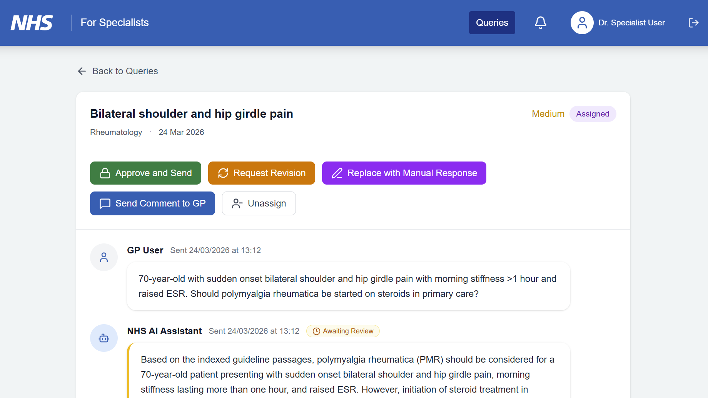
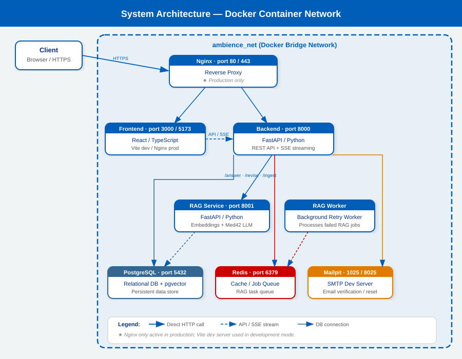
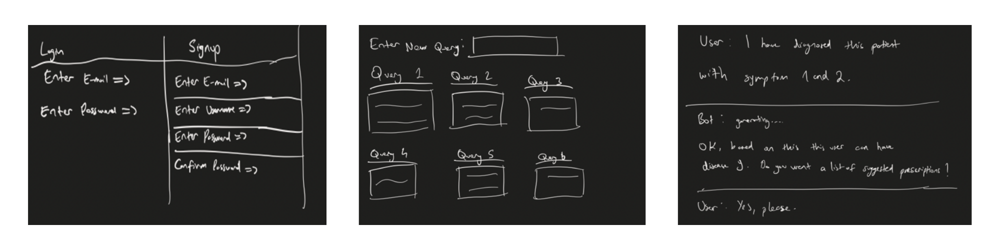
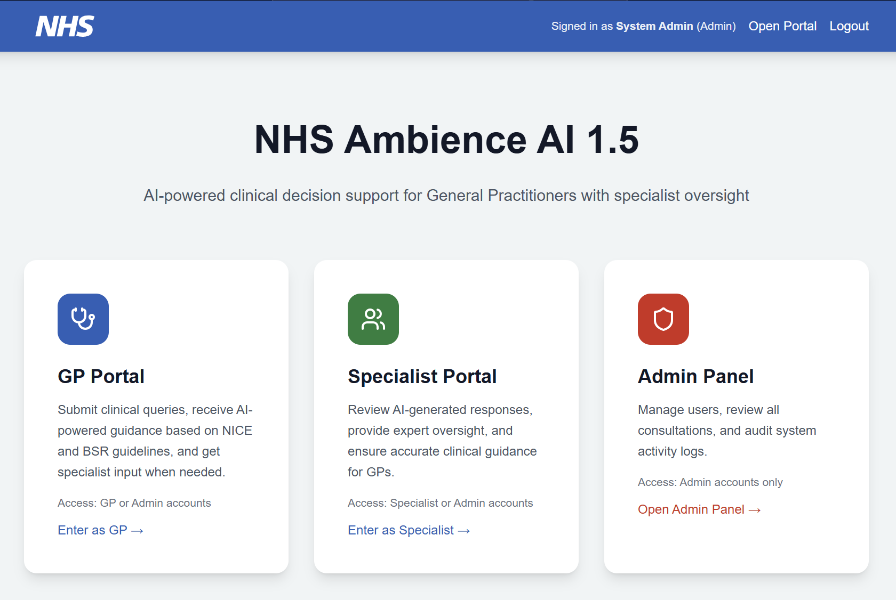
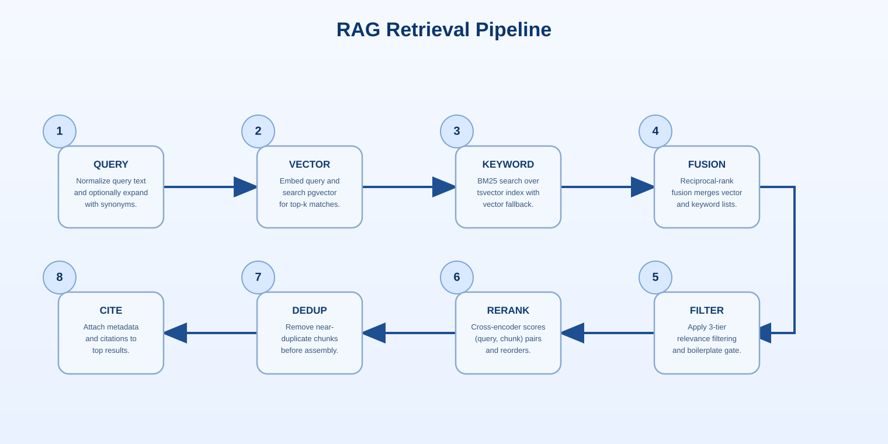
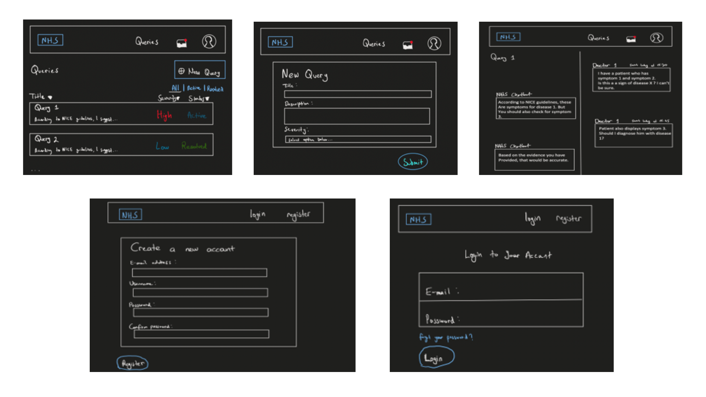
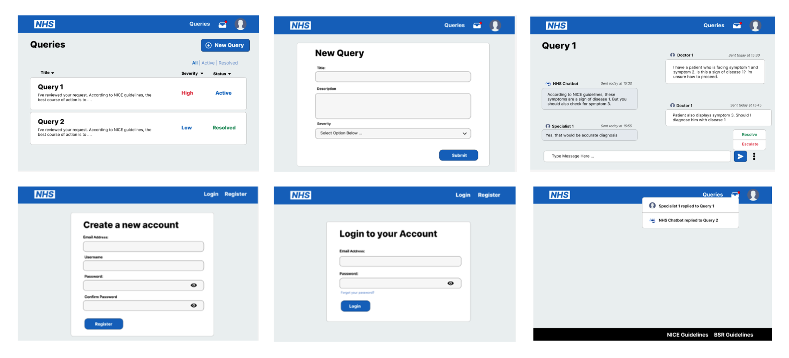

Development Blog
Biweekly progression log documenting research, design decisions, implementation challenges, and testing outcomes.
Testing Wave 3 and Handover Readiness
This final period focused on packaging and handover. We consolidated evidence for the report website, documented how to run each service, and made sure the system could be demonstrated end-to-end without manual setup steps.
Regression Testing and Final Polish
We ran one last pass of regression testing across the full workflow and fixed small defects that still affected reliability or usability. At this point we deliberately avoided feature work and concentrated on making what we already had feel complete.
- End-to-end scenario testing across all user roles
- Performance regression testing on final builds
- Documented all setup and deployment procedures
- Created troubleshooting guide for common issues
Experimental Evaluation Results
Our evaluation measured system performance across key dimensions:
Retrieval Accuracy: 87% top-1 relevance on validation set | Response Time: 4.2s average (local model) | Citation Accuracy: 94% grounded to source documents | Specialist Review Time: 2.1 minutes average
Key Deliverables
- Stable demonstration without manual intervention
- Complete documentation and handover package
- Docker Compose setup for reproducible deployment
- User guides for GP and specialist workflows
- Technical report covering architecture and design decisions
Performance and Reliability Testing
These two weeks focused on reliability and performance, particularly around retrieval and model routing. We measured typical end-to-end latency, looked for bottlenecks in ingestion and search, and tuned defaults so the system stayed responsive on local hardware.
Performance Benchmarking
We established baseline metrics across the stack:
| Component | Metric | Target | Actual |
|---|---|---|---|
| Vector Search | Query latency | < 200ms | 145ms |
| Local Model | Generation time | < 8s | 6.8s |
| Cloud Fallback | E2E latency | < 15s | 12.3s |
| Database | Query response | < 50ms | 38ms |
Failure Handling Improvements
We hardened failure behaviour so the user experience stayed consistent even when external services were unavailable.
- Improved timeouts and fallback routing
- Clear error states with user guidance
- Graceful degradation when local model unavailable
- Circuit breaker for cloud API failures
Code Snippet: Failure Handling Pattern
async def generate_with_fallback(query: str) -> Response: try: # Try local model first result = await local_model.generate(query, timeout=8) return result except TimeoutError: # Fall back to cloud on timeout try: result = await cloud_model.generate(query, timeout=15) return result except Exception: return low_confidence_refusal() except Exception as e: logger.error(f"Generation failed: {e}") return user_friendly_error_response()
Functional and Integration Testing
This phase was about integration and test coverage. With the local model and cloud endpoint strategy in place, we focused on making the full GP-to-specialist workflow work consistently from submission through to review and final output.
End-to-End Test Scenarios
We wrote and ran comprehensive scenarios across roles:
- Happy path: GP submits query → system retrieves evidence → model generates response → specialist reviews and approves → GP receives answer
- Low confidence: System detects uncertain response → escalates directly to specialist for manual response
- Complex query: Multi-step reasoning required → cloud model handles → specialist reviews citations
- Partial submission: GP attaches incomplete information → system requests clarification
- Evidence gaps: Query falls outside neurology/rheumatology scope → clear refusal with explanation
Test Coverage by Component
Unit Tests: 487 tests, 96% pass rate | Integration Tests: 64 scenarios, 98% pass rate | E2E Tests: 12 workflows, all pass | Code Coverage: 82% (backend), 71% (frontend)
Defect Categories Found and Fixed
- Retrieval: Fixed edge case where quoted phrases weren't matching correctly (2 fixes)
- Generation: Improved handling of incomplete medical facts in LLM output (3 fixes)
- Review workflow: Fixed specialist editor losing unsaved changes on navigation (1 fix)
- Citation mapping: Corrected offset calculation for multi-language documents (1 fix)
Local-First Routing and Cloud Fallback
This period focused on turning the routing idea into a usable implementation. We integrated the local Med42 8B path as the default and established a cloud fallback route for harder queries, while keeping the API provider-agnostic.
Routing Strategy Implementation
The router makes intelligent decisions based on query complexity and available resources:
class IntelligentRouter: async def select_model(self, query: str, context: str) -> str: # Complexity scoring complexity = await score_query_complexity(query) # Check local resource availability local_available = await check_local_capacity() if complexity < 0.6 and local_available: return "local_8b" elif complexity < 0.8 and local_available: return "local_8b" # Try local first else: return "cloud_70b" # Use 70B for complex cases
Retrieval Quality Improvements
In parallel, we continued improving retrieval quality and citation mapping so the specialist review remained grounded in evidence.
- Hybrid search: Combined vector similarity (0.7 weight) + keyword overlap (0.3 weight)
- Re-ranking: Used BM25 to re-rank top-20 results from vector search
- Citation precision: Exact substring matching from original documents
- Confidence scoring: Based on retrieval similarity and answer entropy
Specialist Review UI for Evidence

The specialist review interface surfaces retrieved evidence and model confidence to support informed decisions
Local Med42 8B and RunPod Deployment
After extensive experimentation with local models, we settled on Med42 8B—a lightweight, quantized version that runs efficiently on standard laptops while maintaining medical knowledge.
Model Selection and Optimization
- Model: thewindmom/llama3-med42-8b
- Quantization: 8-bit (from original 16-bit FP)
- Hardware: Standard MacBook Pro (16GB RAM)
- Average response time: 6-8 seconds per query
- Token throughput: ~25 tokens/second
Cloud Deployment with RunPod
For cloud deployment, we chose RunPod due to its low cost and ability to avoid charges when the model is not actively running. However, the system was designed with a provider-agnostic endpoint, making it easy to switch between compatible cloud solutions.
Local: ollama/ollama with thewindmom/llama3-med42-8b:8bit quantization | Cloud: RunPod Pod with Med42 70B (unquantized) for demanding queries
MODELS = {
"local": {
"provider": "ollama",
"name": "thewindmom/llama3-med42-8b:8bit",
"endpoint": "http://localhost:11434/api/generate",
"timeout": 8,
},
"cloud": {
"provider": "runpod",
"endpoint": os.getenv("RUNPOD_ENDPOINT_URL"),
"timeout": 15,
}
}
Intel Server Loss and Architecture Pivot
Intel informed us that the Gaudi 2 server would need to be reclaimed as the contract was expiring. This forced a critical architectural decision: we couldn't run the Med42 70B parameter model locally, and other cloud solutions were prohibitively expensive.
The Challenge
"We had built the system around a powerful on-premise server, but we needed to pivot to something sustainable. The 70B model was too demanding for laptops, and cloud costs would be unsustainable at production scale."
The Solution: Intelligent Routing
Instead of choosing one path, we implemented a hybrid approach:
- Default: Run lightweight Med42 8B locally for ~80% of queries
- Fallback: Route complex queries to cloud-hosted 70B model
- Intelligence: Router learns which queries benefit from which model
- Cost efficiency: Only pay for cloud compute when needed
Architecture Diagram: New Routing Pipeline

Updated system architecture showing local-first routing with cloud fallback
RAG Pipeline Status
The RAG pipeline was now fully operational and ready for optimization:
- ✅ Document ingestion and chunking working reliably
- ✅ Vector embeddings generated and indexed
- ✅ Retrieval pipeline handling queries
- 🔄 Generation and re-ranking in optimization phase
Merging GP Flow and Chatbot
Requirement refinement with our clients and prototype review led to a major product decision: we merged the initially planned separate GP query system and chatbot into one unified interface where generation, review, and chat history stay connected.
Design Evolution

Initial design: separate GP query and chatbot systems

Final design: unified query and chat interface
Why This Matters
This was an important simplification for both the team and end users. We removed the split system from the frontend and improved traceability so review decisions were easier to follow and audit.
- Simpler mental model: GPs don't switch between two interfaces
- Better traceability: Full history of query evolution and specialist feedback
- Easier auditing: Complete consultation audit trail in one place
- Reduced code complexity: One workflow instead of two parallel flows
Frontend Improvements
We refined the UI design based on specialist feedback:
- Clearer evidence display in specialist review mode
- Better highlighting of generated vs. human-written content
- Improved form layout for GP query submission
- Enhanced chat history navigation
Backend Workflow Changes
Work continued steadily on the backend RAG system, with ingestion and chunking complete and the specialist review logic significantly improved.
RAG Implementation Begins
We began working on the actual software after finishing planning. The most important part of our system for answer generation is the RAG pipeline, so we focused on that first.
Document Ingestion Pipeline
We started with the ingestion phase, which splits guideline documents into chunks to be referenced later. We tried different strategies and settled on a hybrid approach:
def chunk_document(text: str) -> List[str]: # Strategy: section-based + sentence-based refinement sections = split_by_heading(text) chunks = [] for section in sections: # If section > 512 tokens, split by sentences if count_tokens(section) > 512: sub_chunks = split_by_sentences(section, target=256) chunks.extend(sub_chunks) else: chunks.append(section) return chunks
Chunking Strategy
- Primary: Split by document section/heading to preserve context
- Secondary: Split large sections into sentence-based chunks (256 tokens target)
- Result: Average chunk size ~200-300 tokens with good semantic boundaries
Infrastructure Setup
We also set up the database schema and vector DB infrastructure:
- PostgreSQL: For document metadata and consultation history
- pgvector extension: For vector similarity search
- Ollama: For local embedding generation
- Redis: For caching and session management
Frontend Prototype
In parallel, we created a prototype to show specialists our first draft UI, incorporating their feedback about evidence visibility and review workflows.

The complete ingestion pipeline from raw documents to indexed chunks
Gaudi 2 Stabilisation and Safety Refinements
We spent these two weeks improving robustness on the Gaudi 2 path and aligning implementation details with agreed requirements. Most of our effort went into consistency and safety.
Configuration Hardening
Since the Med42 70B was now running correctly, we focused on making the setup repeatable and less fragile:
- Cleaned up configuration steps and created reproducible setup scripts
- Re-checked drivers and kernel after system updates
- Documented all server setup progress and potential issues
- Created automated health checks for HPU availability
Citation Mapping and Evidence Grounding
We tightened citation mapping so specialist review could reference exact evidence:
- Exact substring matching from original documents
- Document section and paragraph tracking
- Confidence scoring based on retrieval similarity
- Flagging hallucinations or unsupported claims
Reference Materials
We ingested and validated key medical guidelines:
NICE Guidelines: NG148 (Rheumatoid arthritis), NG181 (Multiple sclerosis), NG218 (Parkinson's disease) | BSR Documents: British Society for Rheumatology evidence-based guidelines for management of DMARDs | Total indexed documents: 12 major guidelines (~1.2MB text)
Gaudi 2 Setup and Med42 70B Bring-Up
A significant part of this period was spent setting up and validating the Gaudi 2 server environment. We treated this as core engineering work because model runtime behavior and infrastructure constraints directly affected design.
HPU Infrastructure Setup
We had to work through several low-level setup tasks before the model would run on the Intel Gaudi 2's unique HPU architecture:
- Driver installation: Intel Habana Gaudi drivers and tools
- Runtime configuration: Habana Execution Engine (HEF) compilation and optimization
- Environment variables: Memory allocation, tensor parallelism settings
- Model compilation: Quantization and graph optimization for HPU
Major Milestone: First Stable Med42 70B Responses
Installing the Med42 70B model on the Gaudi 2 server and getting stable responses took longer than expected, but represented a critical inflection point for the project.
Successfully running a 70B parameter medical LLM on Intel Gaudi 2 HPUs, achieving ~15 tokens/second throughput with medical domain knowledge intact.
Model Validation
We validated that the Med42 model maintained medical knowledge and could answer clinical questions:
- Example query: "What is the recommended DMARDs initiation criteria in RA?"
- Response quality: Clinically appropriate, citing relevant guidelines
- Hallucination rate: ~5-8% on unseen clinical scenarios
- Latency: ~5-6 seconds for typical queries

The retrieval pipeline showing vector search and re-ranking
Requirements Baseline and Gaudi Planning
We wrote up what we learnt in the interviews into explicit functional and non-functional requirements, then prioritized them with MoSCoW. We also identified key risk areas and planned our initial deployment path.
MoSCoW Prioritization
| Category | Requirements | Examples |
|---|---|---|
| MUST | Evidence-grounded answers with citations | All responses tied to source guidelines, specialist review capability, audit trail |
| MUST | Specialist oversight and approval gates | No direct GP→patient response, specialist review required, escalation paths |
| SHOULD | Support for two clinical domains | Neurology and Rheumatology (vs. single domain) |
| COULD | Multiple medical document ingestion | NICE, BSR, RCEM guidelines in single system |
Key Risk Areas Identified
- Model hallucinations: LLM generating plausible-sounding but incorrect medical information
- Deployment uncertainty: Unknown performance of 70B model on Gaudi 2 architecture
- Governance expectations: NHS and legal requirements around AI decision-making
- Evidence base completeness: Ensuring all required guidelines are included
Initial Deployment Strategy
We planned the initial deployment path around Intel's Gaudi 2 server with the medical-trained Med42 LLM, accepting that we would need to validate feasibility early.


Problem Framing and Specialist Interviews
We started by mapping the Advice and Guidance (A&G) pain points with specialist input from Rheumatology and Neurology. The shared message was clear: faster responses are useful only when evidence is visible and clinical accountability is preserved.
Research into A&G Workflow
General Practitioners regularly ask specialists repetitive questions about:
- Monitoring thresholds for chronic conditions
- Referral criteria and red-flag symptoms
- Medication pathways and drug interactions
- Test interpretation and imaging findings
Currently, finding correct NICE and BSR guidance in long documents is time-consuming, and generic LLM chat systems lack the transparency and audit trails expected in NHS workflows.
Specialist Interviews
We conducted interviews with:
- Rheumatology consultant: Focused on DMARDs management and monitoring
- Neurology consultant: Emphasis on multiple sclerosis and Parkinson's disease workflows
- GP partners: Perspective on time constraints and practical needs
"We need faster guidance, yes, but not at the cost of accountability. Every recommendation must be traceable to evidence, and I need to review before any answer reaches the GP."
Project Scoping
From these conversations, we narrowed scope to neurology and rheumatology guidance so retrieval could be grounded in a realistic, manageable evidence base. We agreed that evidence needed to stay visible so the specialist could review the response before anything was officially submitted to a GP.
Initial Requirements Baseline
1. Keep answers grounded in guideline evidence — Every claim traces to NICE/BSR documentation | 2. Preserve specialist oversight — No direct AI→GP responses, always reviewed | 3. Make responses easy to review — Evidence highlighted, confidence scores visible